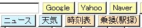
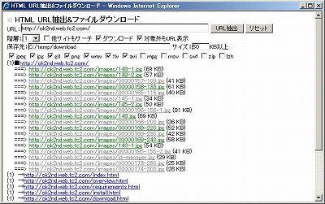
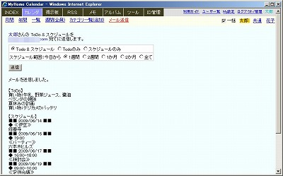
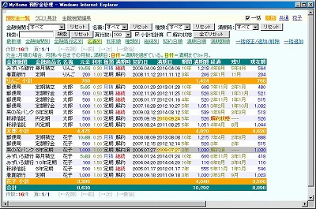
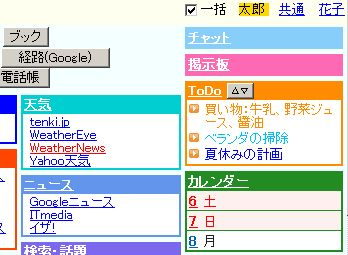
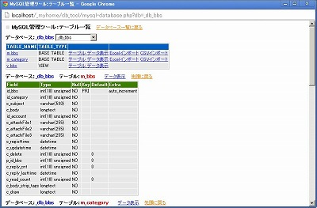
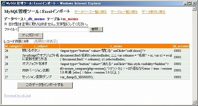

MyHome Portal 変更履歴
以下は、バージョン1.71以前の履歴です。 最新(2.00以降)の履歴に戻る
MyHome Portal Ver.1.71 (2009/08/20)
- 変更点
- ツール「実運用環境バックアップ」のバックアップ先ディレクトリ指定を、Windows物理パス指定ができるように変更。
Ver.1.70以前の/xampp/htdoc以下のパス指定では、バックアップファイルがWeb経由でダウンロードできてしまい、セキュリティ上問題です。
「実運用環境バックアップ」を使う場合、実運用定義ファイルに追加した定数「BACKUP_MYDB_DIR_REAL」のコメントアウトを外して、 /xampp/htdocsの下以外のディレクトリを指定してください。
//define("BACKUP_MYDB_DIR_REAL", "D:/_myhome_backup"); //←優先(物理パス)Ver.1.70以前で作成されたディレクトリ「/xampp/htdoc/_myhome_backup」は安全のため、必ず削除してください。 - 変更モジュール
・db_tool/backup-mydb.php
・__define_common_my_sample.php
MyHome Portal Ver.1.70 (2009/08/13)
- 変更点
- 「ファイル暗号化/復号化」「実運用環境バックアップ」の暗号化方式の変更。関数Crypt_Blowfishを使った方式にしました。前のバージョンで暗号化したファイルと区別するために、ファイル拡張子を.encode3にしました。
- Crypt_Blowfishでの暗号化では、ファイルサイズが大きいとエラー(Out of memory)になるため、ファイルサイズの制限を設定をしました。定義ファイルで約50MBに設定しています。
- 「ファイル暗号化/復号化」では、チェックボックスで「XORで暗号化」を選択することもできます。ただし、暗号化キーコードが推測されるリスクがあります。「XORで暗号化」した場合、ファイル拡張子は.encode2になります。
- 「実運用環境バックアップ」では、実運用定義ファイルで暗化方式を選択できます。
- 「PHP/JavaScriptソースコード表示&編集」「ファイル暗号化/復号化」のファイルマネージャー部分にファイル削除機能追加。ゴミ箱に入るわけではなく、実際に削除されますので、ご注意ください。
- 一部のツールのCSSを一部統一。
- 変更モジュール
・tools/file-manager.php, file-cipher.php, __include-file-cipher.php
・tools/code-file-view.php
・tools/html-text-mail.php, html-get-url-img.php
・db_tool/backup-mydb.php, mysql-database.php, mysql-table-list.php, excel-import.php
・style/original/db_tools.css
・__define_common_my_sample.php - 追加モジュール
・tools/file-delete.php
・style/original/tools_common.css - ファイル名変更モジュール
・tools/file-copy.php, file-rename.php
MyHome Portal Ver.1.69 (2009/08/09)
- 変更点
- ツール「ファイル暗号化」で、暗号化ファイル内に暗号化キーコードがそのまま見えてしまう場合がある問題の対策。ただし、小手先の対策です。書き込むときにビット反転させて書き込んでいます。前のバージョンで暗号化したファイルと区別するために、ファイル拡張子を.encode2にしました。
- ツール「ファイル暗号化」で、ファイルサイズが大きいとエラーになってしまう問題の対策。ファイルサイズに関係なく処理できるようにしました。ただし、処理時間がかなりかかります。
- 変更モジュール
・tools/file-manager.php, __include-file-cipher.php
MyHome Portal Ver.1.68 (2009/08/08)
- 変更点
- 「ファイル暗号化＋ファイルマネージャー」ツールを追加。ファイルの暗号化と復号化ができます。
実運用定義ファイルで暗号化キー「FILE_MANAGER_CIPHER_SEED」を設定しておく必要があります。利用開始後、「FILE_MANAGER_CIPHER_SEED」を変更すると、それ以前に暗号化したファイルは復元できなくなります。 - ツール「実運用環境バックアップ」にファイル暗号化機能追加。
バックアップ実行ボタンを2度押しすると、ハングアップするので、ボタン2度押し禁止設定。
- 定義ファイルのバックアップ先ディレクトリを相対パスから絶対パスに変更しましたので、ご注意ください。
define("BACKUP_MYDB_DIR", "/_myhome_backup"); - IEでウインドウの横幅を狭くすると、ページ右上メニューが縦長になってしまう問題を修正。(リストでの対策が分からなかったのでテーブルに変更して対処。common.cssも修正。)
- ID管理のID/パスワードの暗号化強化。実運用定義ファイルで「_DB_ANGOUKA_KEY_EOR」を設定すると暗号化を2重に行います。_DB_ANGOUKA_KEY_EORの文字列と排他的論理和での暗号化を行います。
すでに登録済みのID/パスワードは修正を行うと、その時点で暗号化の2重化をします。 - ID管理でID/パスワード入力欄に長い日本語文字列を入力する場合は、ID管理用データベース「_db_zid_mgr_b」「_mydb_zid_mgr_b」のテーブル「m_pass2」のカラム「c_val1」～「c_val6」の桁数を大きくしてください。全角で50文字程度入力する場合は、varchar(700)程度にしてください。コマンドプロンプトから以下を実行してください。MySQL管理者ユーザーrootのパスワードを「kanri789」として説明します。
mysql -u root -pkanri789 use _mydb_zid_mgr_b; alter table m_pass2 modify c_val1 varchar(700) NOT NULL; alter table m_pass2 modify c_val2 varchar(700) NOT NULL; alter table m_pass2 modify c_val3 varchar(700) NOT NULL; alter table m_pass2 modify c_val4 varchar(700) NOT NULL; alter table m_pass2 modify c_val5 varchar(700) NOT NULL; alter table m_pass2 modify c_val6 varchar(700) NOT NULL; exit;
- 定義ファイルの動画定義定数「IS_VIDEO_EXT」にAVCHDの拡張子「m2ts」を追加。
- 変更モジュール
・__common__/__define_common.php, include-common-html.php
・tools/code-file-copy.php, code-file-rename.php
・db_tool/backup-mydb.php
・style/original/common.css
・__define_common_my_sample.php - 追加モジュール
・tools/file-manager.php, file-cipher.php, __include-file-cipher.php
MyHome Portal Ver.1.67 (2009/08/01)
- 変更点
- ツールにシステム管理者用ツール「実運用環境バックアップ」を追加。
実運用定義ファイル「__define_common_my.php」と実運用データベースのバックアップをします。
MySQLデータベースをmysqldumpでバックアップします。
実運用定義ファイル「__define_common_my.php」と、MySQLデータベースバックアップファイルを、ZIPファイルに圧縮します。ZIPファイル生成には、CreateZipFileを使っています。
http://olederer.users.phpclasses.org/browse/package/2322.html - スタイルシートのうち、common.cssを別ディレクトリから参照できるように、定義ファイルを変更。
common.cssを別ディレクトリにコピーし、カスタマイズしてご利用ください。
実運用定義ファイルの以下の部分を修正してください。(以下は修正例)define("_STYLE_SHEET_FOLDER_COMMON", "../../_myhome_myset"); - トップページ検索ボタンの百度をFresheye(コトバノウチュウ)に変更。
- トップページ用サンプルブログパーツを、NHK NewsからGoogle Newsに再変更。
- RSSサンプルデータベース_db_rssも、NHK NewsからGoogle Newsに再変更。
- 変更モジュール
・__common__/__define_common.php
・tools/index.php
・blog-parts/rss-google-news.inc
・__define_common_my_sample.php
・common.cssを参照しているすべてのモジュール
・index/__define_index_search.php
・__define_index_search_my_google.php
・__define_index_search_my_yahoo.php - 追加モジュール
・db_tool/backup-mydb.php
・db_tool/CreateZipFile/一式
MyHome Portal Ver.1.66 (2009/07/26)
- 変更点
- トップページ検索ボタンが、下のインデックス部分が4列未満でも改行しないように変更。
- トップページ検索キーの全角スペースを半角スペースに置き換えるようにしました。
- トップページ用サンプルブログパーツを、Google Newsの代わりにNHK Newsに変更。
- RSSサンプルデータベース_db_rssも、Google NewsからNHK Newsに変更。
- 変更モジュール
・__common__/__define_common.php
・index/__define_index_search.php
・__define_common_my_sample.php, __define_index_search_my_google.php, __define_index_search_my_yahoo.php
・z_db_backup/_db_rss.bk.txt - 追加モジュール
・blog-parts/rss-nhk-news.inc - 削除モジュール
・blog-parts/rss-google-news.inc
MyHome Portal Ver.1.65 (2009/07/25)
- 変更点
- トップページ検索ボタンの追加。
Naver、Bing、ブログ(Google)、天気(tenki.jp)、料理(Cookpad)、料理(キッコーマン)、価格.com、楽天、Amazon、Yahooオークション、YouTube、Twitterを追加。 - トップページ検索ボタン部分を別モジュール化し、ユーザーがカスタマイズできるようにしました。不要なボタンを外したり、順番を入れかえたりできます。HTMLとJavaScriptが少し分かる人なら、ボタンの追加など自由な編集が可能です。
カスタマイズ用の検索ボタンモジュールとして、Yahoo検索ボタンを先頭にしたタイプも用意しました。EntrerキーでYahoo検索ができます。
カスタマイズする場合、__define_index_search_my_google.php, __define_index_search_my_yahoo.phpの２つのファイルを、実運用環境ディレクトリ(/htdocs/_myhome_myset/)にコピーして編集してください。
実運用定義ファイルの以下の部分を変更してください。
_DEFINE_INDEX_SEARCH_MYで検索ボタンモジュールを指定してください。
__define_index_search_my_yahoo.phpを使う場合は、SEARCH_FORM_INPUT_TEXT_NAME_indexを"p"にしてください。
// ★ index トップページ 検索ボタン定義ファイル define("_DEFINE_INDEX_SEARCH_MY", ""); // define("_DEFINE_INDEX_SEARCH_MY", "../../_myhome_myset/__define_index_search_my_google.php"); // define("_DEFINE_INDEX_SEARCH_MY", "../../_myhome_myset/__define_index_search_my_yahoo.php"); // ★ index トップページ 検索フォーム優先サイト NAME属性 define("SEARCH_FORM_INPUT_TEXT_NAME_index", "q"); // (Googleの場合) //define("SEARCH_FORM_INPUT_TEXT_NAME_index", "p"); // (Yahooの場合)
- 変更モジュール
・index/top.php, __define.php
・__common__/__define_common.php
・__define_common_my_sample.php - 追加モジュール
・index/__define_index_search.php
・__define_index_search_my_google.php
・__define_index_search_my_yahoo.php
MyHome Portal Ver.1.64 (2009/07/15)
- 変更点
- 不具合修正です。Ver.1.63で、PHP5.3.0以降非推奨の関数split()をexplode()に置き換えましたが、正規表現を使っている箇所ではpreg_split()に置き換えました。しかし、split()とpreg_split()の正規表現の違いをチェックしていなかったため、ID管理のスペースとハイフンによるセパレート機能が働かなくなっていました。この不具合を修正。
- 変更モジュール
・id-manager/list-my-template.php
・id-manager/view-idpass.php
MyHome Portal Ver.1.63 (2009/07/14)
- 変更点
- ツール「HTML URL抽出&ファイルダウンロード 」を追加。ホームページのHTMLからAタグのURLを抽出します。AタグやIMGタグの画像や動画等のファイルをダウンロードすることもできます。ダウンロードファイルの保存先は、サーバーローカルディスクの任意のディレクトリを指定できます。
- 関数split()が、PHP5.3.0以降非推奨となったため、explode()に置き換えました。
 - 変更モジュール
・tools/index.php
・__common__/__define_common.php
・__define_common_my_sample
・関数split()を使っていた全てのモジュール - 追加モジュール
・tools/html-get-url-img.php
MyHome Portal Ver.1.62 (2009/06/28)
- 変更点
- ツール「HTMLテキスト抽出&メール送信」のテキスト抽出ロジックを修正。
- ツール「HTMLテキスト抽出&メール送信」にリセットボタンを追加。
- 変更モジュール
・tools/html-text-mail.php
MyHome Portal Ver.1.61 (2009/06/27)
- 変更点
- ツールに「HTMLテキスト抽出&メール送信」を追加しました。ホームページのURLを入れてボタンを押すと、HTMLからテキストのみを抽出します。抽出したテキストから編集で必要な部分のみを抜き出してメール送信できます。メール送信先は、My設定でスケジュール送信先として登録してある電子メールアドレスです。料理レシピサイトなどから料理の材料部分のみを抜き出して自分の携帯メールに送信するなどの使い方ができます。

- HTMLテキスト抽出を使う場合、企業内イントラなどプロキシ経由の環境では、定義ファイルでプロキシサーバの設定をしてください。
define("HTTP_PROXY_HOST", ""); // HTTP プロキシサーバ アドレス define("HTTP_PROXY_PORT", ""); // HTTP プロキシサーバ ポート - ID管理で、値に半角スペースが含まれている場合も、-によるセパレータ表示をするようにしました。
- ID管理で、W↑をクリックすると、ID&パスワードの小ウインドウと該当ホームページのウインドウ2つを同時に開くようにしました。ID&パスワードのコピー&ペーストがし易くなります。
- 変更モジュール
・__common__/__define_common.php
・id-manager/list-my-template.php, __define.php, input.php
・tools/index.php
・style/original/id-manager.css
・__define_common_my_sample - 追加モジュール
・id-manager/view-idpass.php
・tools/html-text-mail.php
MyHome Portal Ver.1.60 (2009/06/17)
- 変更点
- ToDoおよびスケジュールを携帯電話等のメールアドレス宛に送信できるようにしました。ユーザー各自が事前にMy設定で「スケジュール送信先」メールアドレスを登録しておく必要があります。
 - My設定で登録するメールアドレスを「パスワード忘れ用」と「スケジュール送信先」に分けました。スケジュール送信先は携帯メール等を想定しています。
- 定義ファイルの電子メール関係の定数名を変更しました。
define("_SENDMAIL_HOST", "localhost"); // smtp サーバ (php.ini) define("_SENDMAIL_PORT", 25); // smtp ポート (25、587など) define("_SENDMAIL_EMAIL_NAME", "MyHome Portal"); // Emailに使う送信者名(日本語不可) define("_SENDMAIL_EMAIL_ADDR", "xxx@xxx.com"); // 送信者Emailアドレス define("_SENDMAIL_EMAIL_USER", ""); // 送信者Emailアカウント(smtp認証を使う場合) define("_SENDMAIL_EMAIL_PASS", ""); // 送信者Emailアカウントパスワード(smtp認証を使う場合) define("_SENDMAIL_AUTH_USE", False); // smtp認証を使う場合: True define("_FORGOT_PASS_USE", False); // パスワード忘れのメール送信機能を使う場合: True define("_SCHEDULE_SENDMAIL_USE", False); // スケジュールメール送信機能を使う場合: True - 電子メール送信を、mb_send_mail()から、PEAR::Mailに変更しました。SMTP認証も使えるようにしました。通常のプロバイダのメールアカウントでメール送信機能が使えます。定義ファイルで送信者として使うEmailアカウントのユーザー名、パスワードを設定してください。
- 「パスワード忘れ」およびカレンダーの「メール送信」は、定義ファイルでそれぞれメール送信機能を使う設定にしないと表示されません。
- ID管理で値に「-」が含まれている場合、-で区切ったボックス表示と-抜きのボックス表示をするようにしました。クレジットカードのナンバを想定しています。サイトにより、4桁単位で入力するシステムと16桁一括で入力するシステムがあるのに対応するため。

- ツールの預貯金管理で、小計もできるようにしました。並び替えのキーに合わせて小計を表示します。並び替えキーを契約日と満期日にした場合は、それぞれ年単位で小計します。
 - 実運用モードの掲示板の投稿者フィルタにテストモードのユーザーが表示されてしまう不具合を修正。
- 月間カレンダーで非公開スケジュールの背景をグレー表示するようにしました。
-
MySQLデータベース_db_accountのテーブル「m_account」に、列「c_email_calendar」を追加しました。
既に運用中のデータベースに列を追加する場合は、コマンドプロンプトから以下を実行してください。
MySQL管理者ユーザーrootのパスワードを「kanri789」として説明します。
【サンプルモードDB】
mysql -u root -pkanri789 use _db_account; ALTER TABLE m_account ADD c_email_calendar VARCHAR(255) NOT NULL; exit D: cd "D:\xampp\htdocs\_myhome\z_db_backup" mysql -u root -pkanri789 _db_account < create_view_db_account.txt
【実運用DB】
mysql -u root -pkanri789 use _mydb_account; ALTER TABLE m_account ADD c_email_calendar VARCHAR(255) NOT NULL; exit D: cd "D:\xampp\htdocs\_myhome\z_db_backup" mysql -u root -pkanri789 _mydb_account < create_view_mydb_account.txt
- 変更モジュール
・__common__/__define_common.php, include-common-all.php
・account/__define.php, edit-myprofile.php, forgot-pass.php, myprofile.php, login.php, logout.php
・calendar/send-mail.php, _contents-header.php, _my_calendar.php
・bss/list-my-add-filter.php
・id-manager/list-my-template.php
・kakeibo/list.php, list-my-template.php
・style/original/common.css, id-manager.css
・__define_common_my_sample - 追加モジュール
・calendar/send-mail.php
MyHome Portal Ver.1.59 (2009/06/06)
- 変更点
- ToDo管理機能を追加しました。シンプルかつユニークなToDo機能です。優先順位の変更ができます。文字に色を付けられます。Ajaxを利用して簡便な操作ができます。


- MySQLデータベース_db_calendar/_mydb_calendarに、テーブル「m_todo」を追加しました。
既に運用中のシステムに、テーブルを追加する場合は、コマンドプロンプトから以下を実行してください。MySQL管理者ユーザーrootのパスワードを「kanri789」として説明します。
【サンプルモードDB】mysql -u root -pkanri789 use _db_calendar; CREATE TABLE `m_todo` ( `id_todo` int(10) unsigned NOT NULL auto_increment, `id_account` int(10) unsigned NOT NULL, `c_todo` varchar(250) NOT NULL, `c_color` varchar(50) NOT NULL, `c_priority` int(10) signed NOT NULL default '0', `c_registtime` datetime NOT NULL, `c_updatetime` datetime NOT NULL, `c_delete` int(10) unsigned NOT NULL default '0', PRIMARY KEY (`id_todo`) ) ENGINE=MyISAM AUTO_INCREMENT=1 DEFAULT CHARSET=utf8; exit;
【実運用モードDB】
mysql -u root -pkanri789 use _mydb_calendar; CREATE TABLE `m_todo` ( `id_todo` int(10) unsigned NOT NULL auto_increment, `id_account` int(10) unsigned NOT NULL, `c_todo` varchar(250) NOT NULL, `c_color` varchar(50) NOT NULL, `c_priority` int(10) signed NOT NULL default '0', `c_registtime` datetime NOT NULL, `c_updatetime` datetime NOT NULL, `c_delete` int(10) unsigned NOT NULL default '0', PRIMARY KEY (`id_todo`) ) ENGINE=MyISAM AUTO_INCREMENT=1 DEFAULT CHARSET=utf8; exit;
- チャットのAjaxでキャッシュが使われないようにしました。IEの「インターネット一時ファイル」の設定が「自動的に確認する」になっている場合、キャッシュが使われてしまう問題の対策です。
- チャットで入力欄が空白でもメッセージが追加されてしまう問題を修正。
- INDEXトップページの掲示板表示では、１週間を過ぎたものは表示しないように変更。
- 各コンテンツの一覧画面の検索フィルタを選択した場合、IE以外でも背景色が変わるようにしました。
- 変更モジュール
・__common__/__define_common.php, include-common-mp-list.phpp
・bbs/list-my-add-filter.php
・calendar/__define.php, _my_calendar.php, list-my-add-filter.php, month.php
・chat/list.php, write.php
・index/__define.php, __html-my-header.php, top.php
・styles/original/calendar.css, index.css, mp-list.css
・__define_common_my_sample.php - 追加モジュール
・todo/一式
・styles/original/todo.css
・styles/original/icon/リストマークアイコン数種
MyHome Portal Ver.1.58 (2009/05/31)
- 変更点
- ツールに「(簡易)預貯金管理」を追加。
「(簡易)預貯金管理」のデータベース「_db_kakeibo」を追加しました。
既に運用中のシステムに、データベースを追加する場合は、コマンドプロンプトから以下を実行してください。MySQL管理者ユーザーrootのパスワードを「kanri789」として説明します。
【サンプルモードDB】mysql -u root -pkanri789 create database _db_kakeibo; exit; d: cd "D:\xampp\htdocs\_myhome\z_db_backup" mysql -u root -pkanri789 _db_kakeibo < _db_kakeibo.bk.txt mysql -u root -pkanri789 _db_kakeibo < create_view_db_kakeibo.txt mysql -u root -pkanri789 GRANT SELECT,INSERT,UPDATE,DELETE ON _db_kakeibo.* TO myhome@localhost; FLUSH PRIVILEGES; exit;
【実運用モードDB】
MySQLを一旦停止します。XAMPPコントロールパネルを使って停止してください。サンプルデータベースを名前を変えてコピーすることで、実運用DB「_mydb_kakeibo」を作成します。mkdir D:\xampp\mysql\data\_mydb_kakeibo copy D:\xampp\mysql\data\_db_kakeibo\* D:\xampp\mysql\data\_mydb_kakeibo
MySQLを再起動します。XAMPPコントロールパネルで「開始」を押してください。コマンドプロンプトから以下を実行してください。d: cd "D:\xampp\htdocs\_myhome\z_db_backup" mysql -u root -pkanri789 _mydb_kakeibo < create_view_mydb_kakeibo.txt mysql -u root -pkanri789 GRANT SELECT,INSERT,UPDATE,DELETE ON _mydb_kakeibo.* TO myhome@localhost; FLUSH PRIVILEGES; exit;
サンプルデータベースからコピーされたサンプルデータを削除します。mysql -u root -pkanri789 use _mydb_kakeibo; truncate table m_chokin; truncate table m_category; exit;

- カレンダーの年間表示の内部ロジック変更。スケジュール有無チェックのSQLクエリ発行を、日単位から月1回に変更。年間スケジュール表示の高速化のため。これに合わせて、データベーステーブル「m_schedule」にインデックスを付与。ただし、この修正による高速化は、スケジュール件数が数万件(?)程度以上にならないと効果は現れてきません。
既に運用中のシステムに、インデックスを付与する場合は、コマンドプロンプトから以下を実行してください。MySQL管理者ユーザーrootのパスワードを「kanri789」として説明します。
【サンプルモードDB】
mysql -u root -pkanri789 use _db_calendar; ALTER TABLE m_schedule ADD INDEX (c_date); exit;
【実運用モードDB】
mysql -u root -pkanri789 use _mydb_calendar; ALTER TABLE m_schedule ADD INDEX (c_date); exit;
- include-common-mp-list.phpの修正。項目フィルタを複数可能にするなど、内部関数の引数変更を含む大幅修正。基本機能に大きな変更はありません。
- 「MyHome Portal サンプルDB自動セットアップ(setup-sample.php)」「PHP/JavaScript ソースコード表示&編集＋ファイルマネージャー(tools/__define_code-file.php)」で、デフォルトディレクトリを$_SERVER['DOCUMENT_ROOT']を使うように変更。
- MySQL管理ツールのソース修正。機能に変更はありません。
- チャットのソース修正。機能に変更はありません。
- 変更モジュール
・__common__/__define_common.php, include-common-mp-list.php, include-common-html.php
・account/edit-friends.php, edit-public.php
・calendar/list.php
・bbs/list.php
・tools/index.php
・tools/__define_code-file.php
・styles/original/kakeibo.css - 追加モジュール
・kakeibo/一式
・z_db_backup/_db_kakeibo.bk.txt, create_view_db_kakeibo.txt, create_view_mydb_kakeibo.txt - 移動モジュール
・db_tool/common.css→styles/original/common.css
・db_tool/一式
・chat/一式
・setup-sample.php
MyHome Portal Ver.1.57 (2009/05/24)
- 変更点
- ツールの「MySQL データベース/テーブル一覧」を、「MySQL管理ツール」と名称変更し、「テーブルデータ一覧表示」「Excelインポート」機能を追加しました。
- 「テーブルデータ一覧表示」はページング機能付きです。列目クリックによる並び替えもできます。
- 「Excelインポート」では、Excelシートをアップロードして任意のデータベーステーブルにインポートできます。
-


 - 変更モジュール
・tools/index.php
・__define_common_my_sample.php - 追加モジュール
・db_tool/一式 - 追加ディレクトリ
・_attach/excel-imports/
MyHome Portal Ver.1.56 (2009/05/19)
- 変更点
- 掲示板に「お絵かき」機能を追加しました。お絵かきした絵をそのまま投稿できます。投稿後、修正もできます。
「お絵かき」の実現には、InputDrawを使用しています。
http://www.mainada.net/inputdraw
- MySQLデータベース_db_accountのテーブル「m_bbs」に、列「c_draw」を追加しました。
既に運用中のデータベースに列を追加する場合は、コマンドプロンプトから以下を実行してください。MySQL管理者ユーザーrootのパスワードを「kanri789」として説明します。
【サンプルモードDB】mysql -u root -pkanri789 use _db_bbs; ALTER TABLE m_bbs ADD c_draw longtext NOT NULL; exit; D: cd "D:\xampp\htdocs\_myhome\z_db_backup" mysql -u root -pkanri789 _db_bbs < create_view_db_bbs.txt
【実運用DB】mysql -u root -pkanri789 use _mydb_bbs; ALTER TABLE m_bbs ADD c_draw longtext NOT NULL; exit; D: cd "D:\xampp\htdocs\_myhome\z_db_backup" mysql -u root -pkanri789 _mydb_bbs < create_view_mydb_bbs.txt


- 変更モジュール
・bbs/input.php, view.php, __define.php
・__common__/__define_common.php
・__define_common_my_sample.php - 追加モジュール
・scripts/inputdraw/一式
MyHome Portal Ver.1.55 (2009/05/05)
- 変更点
- 「チャット」を追加しました。MyHome Portalユーザー全員参加型のチャット(Chat)です。
- INDEXトップページに最新(30分以内)の投稿3件分を表示されます。Ajax利用していますので、Webページを開いたままでも、新しい投稿があれば、更新されます。「チャット」をクリックすると、チャット入力ページを別ウインドウで表示します。
- チャット入力ページでは、表示件数や投稿の経過時間を指定できます。
- MySQLにデータベース「_db_chat」を追加しました。
既に運用中のシステムに、データベースを追加する場合は、コマンドプロンプトから以下を実行してください。MySQL管理者ユーザーrootのパスワードを「kanri789」として説明します。
【サンプルモードDB】mysql -u root -pkanri789 create database _db_chat; exit; d: cd "D:\xampp\htdocs\_myhome\z_db_backup" mysql -u root -pkanri789 _db_chat < _db_chat.bk.txt mysql -u root -pkanri789 _db_chat < create_view_db_chat.txt mysql -u root -pkanri789 GRANT SELECT,INSERT,UPDATE,DELETE ON _db_chat.* TO myhome@localhost; FLUSH PRIVILEGES; exit;
【実運用モードDB】
MySQLを一旦停止します。XAMPPコントロールパネルを使って停止してください。サンプルデータベースを名前を変えてコピーすることで、実運用DB「_mydb_chat」を作成します。mkdir D:\xampp\mysql\data\_mydb_chat copy D:\xampp\mysql\data\_db_chat\* D:\xampp\mysql\data\_mydb_chat
MySQLを再起動します。XAMPPコントロールパネルで「開始」を押してください。コマンドプロンプトから以下を実行してください。d: cd "D:\xampp\htdocs\_myhome\z_db_backup" mysql -u root -pkanri789 _mydb_chat < create_view_mydb_chat.txt mysql -u root -pkanri789 GRANT SELECT,INSERT,UPDATE,DELETE ON _mydb_chat.* TO myhome@localhost; FLUSH PRIVILEGES; exit;
サンプルデータベースからコピーされたサンプルデータを削除します。mysql -u root -pkanri789 use _mydb_chat; truncate table m_messages; exit;


- 変更モジュール
・__common__/__define_common.php
・index/__define.php, top.php
・style/original/index.css
・__define_common_my_sample.php, db_backup.txt.php, setup-sample.php, db_restore.txt.php - 追加モジュール
・chat/一式
・style/original/chat.css
MyHome Portal Ver.1.54 (2009/05/03)
- 変更点
- アルバムで、FLV動画をプレビューできるようにしました。ただし、ファイル名やパス名に日本語が含まれている場合は、プレビューできません。ffmpegがインストールされていて、定義ファイルで以下が"YES"になっている必要があります。（インストール Ⅵ 参照）
define("photo_VIDEO_FFMPEG", "YES"); define("photo_VIDEO_PREVIEW", "YES"); - アルバムのスライド表示で、画像の下にファイル名を表示するようにしました。
- 掲示板、メモ、アルバムのFLV動画プレビュー開始画面に、映像の最初の静止画を合わせて表示するようにしました。ffmpegがインストールされていて、定義ファイルで以下が"YES"になっている必要があります。（インストール Ⅵ 参照）
define("photo_VIDEO_FFMPEG", "YES"); - 変更モジュール
・__common__/include-common-html.php, __define_common.php
・photo/__define.php, index.php
・scripts/JWPlayer/movie_preview.js
・style/original/photo.css
・__define_common_my_sample.php - 追加モジュール
・photo/player.swf, yt.swf
MyHome Portal Ver.1.53 (2009/04/27)
- 変更点
- INDEXトップページの検索ボタンにGoogleブック検索を追加。
- カレンダースケジュール入力で件名なしも許可するように仕様変更。件名なしの場合、スケジュール修正画面を開くためのリンクを☆印で表示。件名なしの場合、詳細表示モードでなくても、詳細(本文)表示します。
- My設定で「カレンダーで件名を使わずにスケジュール本文のみ使う」設定ができるようにしました。この設定をすると入力画面に件名欄が表示されません。
- カレンダーの週間(全員)表示で、Google経路検索の起点をそれぞれのユーザーが登録した住所を使うように修正。
- MySQLデータベース_db_accountのテーブル「m_account」に、列「c_cal_sbj_use」を追加しました。
既に運用中のデータベースに列を追加する場合は、コマンドプロンプトから以下を実行してください。MySQL管理者ユーザーrootのパスワードを「kanri789」として説明します。
【サンプルモードDB】mysql -u root -pkanri789 use _db_account; ALTER TABLE m_account ADD c_cal_sbj_use VARCHAR(10) NOT NULL; exit; d: cd "D:\xampp\htdocs\_myhome\z_db_backup" mysql -u root -pkanri789 _db_account < create_view_db_account.txt
【実運用DB】mysql -u root -pkanri789 use _mydb_account; ALTER TABLE m_account ADD c_cal_sbj_use VARCHAR(10) NOT NULL; exit; d: cd "D:\xampp\htdocs\_myhome\z_db_backup" mysql -u root -pkanri789 _mydb_account < create_view_mydb_account.txt
- 変更モジュール
・__common__/__define_common.php, include-common-mp-list.php
・calendar/__define.php, input.php, _my_calendar.php, list.php, list-my-template.php
・account/myprofile.php, edit-myprofile.php, __include-login.php
・index/__define.php, top.php
・__define_common_my_sample.php
MyHome Portal Ver.1.52 (2009/04/19)
- 変更点
- カレンダーにGoogle地図、Google経路検索を連携できるようにしました。カレンダーの本文入力で、駅名や住所を「地」ボタンで囲む(タグ<m></m>で囲まれます。)と、スケジュール詳細表示で「→地図」が表示されます。これをクリックすると、Google地図が別ウインドウで開きます。My設定で「住所 (経路起点)」を登録しておくと「→経路」も表示されます。これをクリックすると、Googleルートマップが別ウインドウで開きます。
- My設定で住所（経路起点）を登録しておくと、INDEX(トップページ)の「経路(Google)」検索ボタンで、目的地のみを入れて起点からのGoogleルート検索ができるようにしました。
- INDEX(トップページ)の設定が「リンク先を新しいウインドウで開く」になっている場合、検索ボタンを押した場合も新しいウインドウが開くように仕様変更。
- 【不具合情報】Google ChromeやSafariでは、カレンダー本文入力の「B」「I」「地」等のボタンによるタグ挿入で、文字列をマウスで右から左に囲んだ場合、正しい位置にタグが挿入されません。
- サンプルDB自動セットアップツール「setup-sample.php」を追加しました。
- MySQLデータベース_db_accountのテーブル「m_account」に、列「c_home_address」を追加しました。
既に運用中のデータベースに列を追加する場合は、コマンドプロンプトから以下を実行してください。MySQL管理者ユーザーrootのパスワードを「kanri789」として説明します。
【サンプルモードDB】mysql -u root -pkanri789 use _db_account; ALTER TABLE m_account ADD c_home_address VARCHAR(200) NOT NULL; exit; d: cd "D:\xampp\htdocs\_myhome\z_db_backup" mysql -u root -pkanri789 _db_account < create_view_db_account.txt
【実運用DB】mysql -u root -pkanri789 use _mydb_account; ALTER TABLE m_account ADD c_home_address VARCHAR(200) NOT NULL; exit; d: cd "D:\xampp\htdocs\_myhome\z_db_backup" mysql -u root -pkanri789 _mydb_account < create_view_mydb_account.txt


- 変更モジュール
・account/myprofile.php, edit-myprofile.php, __include-login.php
・index/top.php
・calendar/input.php, _my_calendar.php, list-my-template.php
・style/original/index.css, calendar.css - 追加モジュール
・setup-sample.php
MyHome Portal Ver.1.51 (2009/04/07)
- 変更点
- 「カレンダー」の入力画面およびポップアップウインドウの予定済みスケジュール表示のデザイン修正。
- 「カレンダー」の入力画面の時間入力欄の位置変更。
- 変更モジュール
・calendar/input.php, _my_calendar.php, popup-schedule.php
・style/original/calendar.css